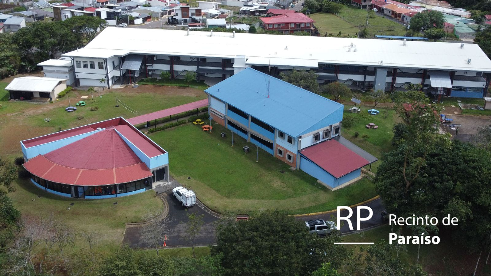
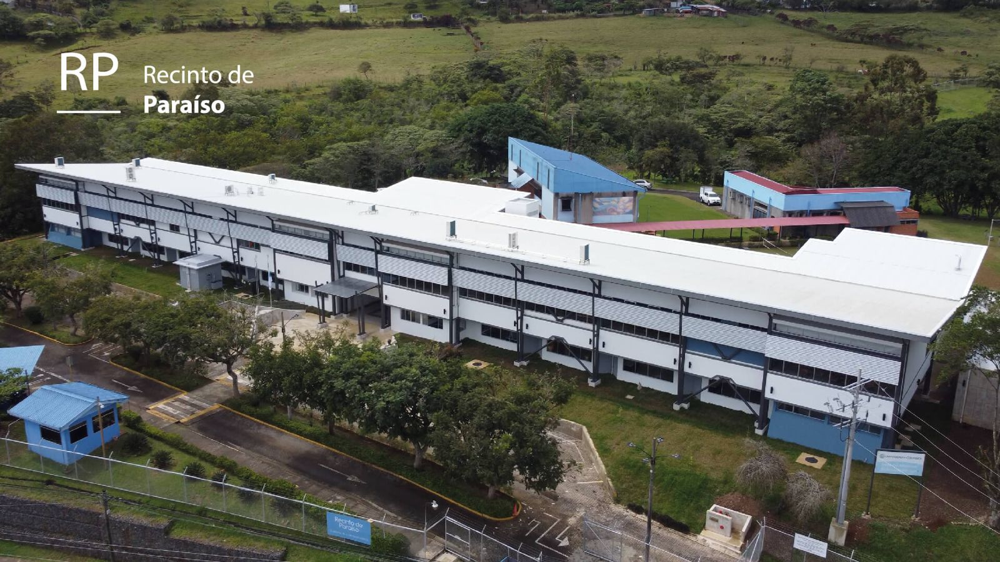

📅 Mar, 19/11/2024 - 08:00
La UCR informa que la construcción del nuevo pabellón de aulas, administración y otros servicios se prevé que finalice a finales de noviembre de este año. Esto permitirá que el Recinto comience a operar plenamente en este nuevo espacio a partir de enero de 2025.
Este nuevo edificio incluirá la adición de 5 aulas, lo que elevará el total a 14, así como un laboratorio de idiomas y un laboratorio de informática. Además, se habilitarán espacios de trabajo para el personal docente, mejorando así las condiciones para la enseñanza y el aprendizaje.
Se espera que esta ampliación tenga un impacto significativo en la Unidad de Vida Estudiantil, que contará con un nuevo espacio diseñado para ofrecer comodidades y condiciones óptimas para brindar los diferentes servicios a la población estudiantil. Además, este proyecto generará beneficios importantes para el cantón de Paraíso, contribuyendo al desarrollo de iniciativas de Acción Social e Investigación.
📅 Vie, 04/11/2022 - 08:00
¡Nueva Maestría en Administración Educativa en Paraíso!
A partir del II Ciclo 2025, ofrecemos una oportunidad única para quienes desean especializarse en administración educativa. Esta maestría profesional, impartida en el Recinto de Paraíso, está diseñada para formar líderes educativos capaces de enfrentar los desafíos de la educación contemporánea.
¿Deseas más información? Contáctanos:
Teléfono: +506 2511-8885 | Horario de atención: Lunes a Viernes, de 1:00 p.m. a 8:00 p.m.
Escríbenos a: digitalppcedu.sep@ucr.ac.cr o posgrado.sa@ucr.ac.cr
Visítanos en línea: https://www.sep.ucr.ac.cr/ppcedu-inicio
(Nota: Dentro de la página, ubica la imagen de la Maestría en Administración Educativa - Recinto Paraíso, ya que también se promociona esta y otras especialidades en la Sede Rodrigo Facio). Clases los sábados – ¡te esperamos para comenzar esta nueva etapa profesional
📅 Mie, 06/11/2024 - 10:00
Cordialmente invitados
MATRÍCULA PARA EL TERCER CICLO 2024
A partir del año 1990 se inician a lo interno de la Sede del Atlántico de la Universidad de Costa Rica, las gestiones correspondientes para ampliar la influencia de esta unidad académica en la región de Cartago, específicamente en el cantón de Paraíso.
En 1992, gracias a un convenio firmado con la Municipalidad de Paraíso, se pudo abrir el Aula de Paraíso, en las Instalaciones del Liceo de Paraíso, con un grupo de Humanidades y una matrícula de 30 estudiantes.